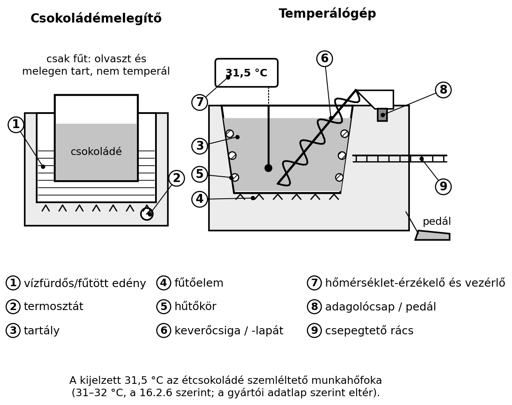
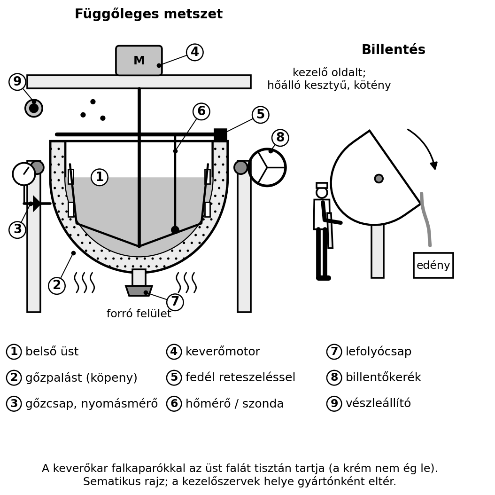

Egy cukrászműhelyben hétvégi termelés indul: leveles vajas tésztát kell hengerelni, majd fondánnal bevonni, tejszínt felverni, temperált csokoládét előállítani, végül főzött krémet hűteni. A dallam minden terméknél azonos: a gép nem csak gyorsít, hanem állandó minőséget ad, kivéve, ha rosszul van beállítva, piszkos vagy nem biztonságos. A kolléga megsérül a résben, a tejszín habja megkeseredik a piszkos fejnél, a temperálógép „csokivajat” ad vissza, a krémfőző leéget. Ez az alfejezet a speciális cukrászati gépek higiénikus és balesetmentes kezelését tanítja.
Képzelj el egy fémhengereket tartalmazó nyújtót. A tészta belép, a hengerrés összenyomja, majd a másik oldalon vékony, sima lappá válik. Ha a rést egyszerre túl sokat zárod, a tészta reped, a vaj kiszakad, és a gép motorja túlterhelődik. A habfúvó fejnél a levegő és a tejszín találkozik: ha ott tejszínkő maradt, a következő adag baktériumot kap. A temperálógép keverőcsigája a csokoládét folyamatosan mozgatja, miközben hűt és fűt, hogy a kakaóvaj kristályai stabil béta-formába rendeződjenek. A krémfőző duplaköpenyes üstje gőzzel fűt, és fűthető, hűthető, keverhető – ez a „főz, kever, hűt, csomómentes” technológiai lánc.
Definíció. Tésztanyújtó (hengergép, tésztanyújtó gép): olyan gép, amely két vagy több párhuzamos, állítható távolságú henger (hengerpár) között egyenletes vastagságúra nyújtja a tésztát. A hengerrés a két henger közötti távolság; állításakor a nyújtott tésztalap vastagságát szabályozzuk.
Definíció. Fondángép (fondán-temperáló, melegítő-keverő): zárt, melegíthető, lassú keverőkaros gép, amely a fondánt melegíti, hígítja, keveri, és a bevonási hőmérsékleten keverve, csomómentesen tartja.
Definíció. Habfúvó (tejszínhabgép, krémszifon vagy gépi habképző): olyan zárt nyomásos vagy folyamatos gép, amely hűtött folyadékba (pl. tejszín) levegőt vagy habosítógázt kever, és állandó térfogatnövekedésű, homogén habot állít elő.
Definíció. Csokoládémelegítő: vízfürdős vagy légkeveréses, szabályozott hőmérsékletű tároló/olvasztó eszköz csokoládé olvasztására, tartására; temperálógép: olyan automata vagy félautomata gép, amely a csokoládét a temperálási görbe szerint fűti, hűti, keveri, és a bevonásra alkalmas kristályszerkezetet hozza létre.
Definíció. Krémfőző (főző-keverő, főzőüst): általában duplaköpenyes, gőzzel vagy elektromosan fűtött, zárt vagy nyitott üst, amelyben a krémeket, gyümölcspépeket, pasztőrözendő masszákat hőkezeljük, keverjük, majd hűtjük.
A tésztanyújtó a leveles, vajas, omlós, linzer, mézes kalácstészta, vajas briós és pizza jellegű tészták hengerlésére szolgál. A tésztát a résbe vezeted, a hengerek simára dolgozzák, miközben a vastagság csökken. A hazai üzemekben gyakori az asztalra szerelhető, illetve állványos pékségiszintű gép.
A hengerrést általában karral, szárnyas anyával vagy digitális tekerővel állítjuk; a gyártói adatlapot be kell tartani. A túl nagy zárás ismert hiba: a tészta kiszakadhat, a vaj kifolyhat, a gép leállhat vagy a motor túlmelegedhet.
Figyelem. A hengerrésbe benyúlni tilos, védőrács nélkül dolgozni tilos, gépi mozgás közben a tésztát ujjal igazítani tilos. Tisztítás előtt áramtalaníts, és várd meg a hengerek leállását.
A gépnézeten a bemenő szalag (1), a hengerpár (2), a hengerrés és a mm-skálás résállító kar (3), a reteszelt védőrács (4), a kimenő szalag (5), az irányváltó pedál (6), a vészleállító (7) és a sraffozott behúzási pont (8) látható. A metszet a tészta útját mutatja: a vastag lap a résen áthaladva vékonyodik, a kéz a kimenő oldalon tartja, de nem húzza. A HTML-kiadásban a hengerrés csúszkával állítható; ha egy lépésben 3 mm-nél többet zárunk, az ábra jelzi a hibát.
Továbbvitt eredmény. A helyes hengerlés és résállítás közvetlenül szolgálja a leveles/vajas tészta készítést a Vajas és leveles tészta: mechanikai lazítás és hajtogatás alfejezetben, és a hengerelt marcipánlapok készítését a Sütőmarcipánok, makronok és nugátok alfejezetben.
A fondángép és a habfúvó közös veszélye a higiéniai kockázat: mindkettő nedves, hűtött vagy visszaforgatott termékkel érintkezik. Ha a gép belsejében vagy a habfúvó fejben tejmaradék, cukormassza, penész vagy szappan marad, az a következő tételt ronthatja. Ezért a higiéniai ellenőrzés itt nem utólagos javítás, hanem a gép kötelező része.
A fondángép nem „vízből és porból főz”, hanem a kész fondánmasszát tartja felhasználható állapotban. Munkamenete:
Higiénia. A fondángép cukortartalma ugyan konzervál, de a külső perem, a fedél, a keskeny rések, a szilikon tömítések alatt élesztő és penészgombák ülhetnek meg. Napi bontás: áramtalanítás után leszedhető részeket meleg, enyhe mosószeres vízzel mosni, öblíteni, fertőtleníteni (a gép típusához engedélyezett szerrel), majd szárazra törölni.
A tejszínhabgép lehet folyamatos, gépbe épített fejes, palackos (szifonos) vagy tartályos. Fontos szabály: csak olyan folyadékot, habosítandó alapot és gázt használj, amit a géphez engedélyeztek; háztartási szifonnal üzemi termelést ne folytass.
Működés: a hűtőközeges tartályban a 30–40% zsírtartalmú tejszín vagy növényi habalap lesz habbá. A fejben a levegő és a habosítógáz apró buborékká oszlik, a fehérje–zsír film stabilizálja a habot. A habminőséget a nyomás, a hőmérséklet, a zsírtartalom, a nyílás és a gáz adagolása szabja meg.
Higiénia. A habfúvó fej, a tömlő, a cső és a nyomószelep napi bontási pont. A tejszínes maradékban gyorsan szaporodnak baktériumok; a megkeseredett, savanyú, penészes maradék a következő tejszínhabot szennyezi. Tisztítási sorrend: áramtalanítás, nyomásmentesítés (ha van), leszedhető alkatrészek, meleg, enyhe mosószeres kézi mosogatás, alapos öblítés, fertőtlenítés, szárítás, majd visszaszerelés.
Szabály. A habfúvóba csak hőkezelt (pasztőrözött vagy UHT) tejszín kerülhet; nyers, hőkezeletlen tejszín cukrászati termékbe nem használható. A pasztőrözött vagy UHT tejszínből készült habot 5 °C alatt kell tartani, és a felhasználásig rövid ideig szabad tárolni (ellenőrizendő: NÉBIH-útmutató/üzemi HACCP). A fel nem használt, már kifújt habot nem szabad visszaönteni, mert a hő- és levegőterhelés már növelte a mikrobakockázatot.
A csokoládémelegítő olvaszt és melegen tart, de önmagában nem temperál. A temperálás akkor sikeres, ha a csokoládét a temperálási görbe szerint felmelegíted, lehűtöd, majd visszamelegíted: pl. étcsokoládénál 45–50 °C-ra olvasztás, 27–28 °C-ra hűtés, 31–32 °C-ra visszamelegítés (szemléltető érték, a gyártói adatlap szerint eltér). A hűtés-tartás-keverés automatái ezt a görbét menedzselik.
A temperálógép működése:

A metszetpár mutatja, miért nem temperál a melegítő: a csokoládémelegítőben csak fűtött (vízfürdős) edény (1) és termosztát (2) van. A temperálógép tartályát (3) fűtőelem (4) melegíti és hűtőkör (5) hűti, a keverőcsiga (6) folyamatosan mozgatja a masszát, az érzékelő és a vezérlő (7) tartja a beállított hőfokot, a csokoládé az adagolócsapon vagy pedállal (8) jön ki, a csepegtető rács (9) fölött.
Hiba. Ha a gépben víz, vízgőz vagy pára kerül a csokoládéba, a massza besűrűsödik, csomósodik, „megfagy” a feldolgozáshoz; ezt ne próbáld vízzel hígítani. Ha a temperálás rossz, a bevonat lassan köt, szürkés-fehér, foltos, puha vagy olvadékony. A stabil béta-kristály hiánya a csokoládéfény hibáját okozza; ezért a hűtési/hőntartási görbe nem átugorható.
Továbbvitt eredmény. A temperálás gépi folyamatát a A csokoládé temperálása: kristályszerkezet és temperálási görbe alfejezet tárgyalja; itt a gép biztonságos működtetését és tisztítását tanultad.
A krémfőző főz, kever, hűt, és pasztőrözést is végezhet. Általában gőzpalástos üst vagy elektromos fűtésű duplaköpeny, belső keverőmotorral, emelő–billentő szerkezettel. Használják vaníliakrém, tojássárga-krém, gyümölcspüré, csokoládéganache, zselatinos massza, fagylaltkeverék, olasz tojáshab főzött cukros részének készítésére.
A gép kezelése előtt ellenőrizd:
A krémfőző munkamenete:
Figyelem. Forró gőz, forró üstfal, forró krém, kiömlés: a keverő és a lefolyó közelében ne érjen bőr a forró felülethez; hosszú, hőálló kesztyűt és kötényt használj, a fedőt óvatosan emeld.

A metszeten a belső üst (1) körül a gőzpalást (2) fűt; a gőzcsap és a nyomásmérő (3) oldalt, a keverőmotor (4) a hídon van, a keverőkar falkaparói az üst falát tisztán tartják. A fedél reteszelt (5), a hőmérő vagy szonda (6) a krémbe nyúlik; alul a lefolyócsap (7), oldalt a billentőkerék (8) és a vészleállító (9). A hullámos jelek a forró felületeket, a pöttyök a kifröccsenést jelzik. Billentéskor a kezelő oldalt áll, hőálló kesztyűben és kötényben.
A speciális gépek tisztítása nemcsak esztétikai kérdés, hanem élelmiszerbiztonsági kötelesség. Az egyes gépeknél az alábbi sorrendet kövesd:
Napi ellenőrzés: kapcsoló, vészleálló, védőrács, reteszek, hőmérséklet-kijelzés, szivárgás, kábelek, tömlők, nyomástartó részek, tömítések.
Technológiai lap. Speciális cukrászati gépek biztonságos üzemeltetése és higiéniai rendje
Egy kis cukrászda esküvői torta rendelést kap: a tésztanyújtóval leveles korongokat hengerel a hajnali műszak, a krémfőzővel vaníliakrémet főznek, a habfúvóval tejszínes mousse-betétet készítenek, a temperálógépből csokoládé dekorációt készítenek. A műszakvezető reggel ellenőrzi a hőmérsékletnaplót, a habfúvó hűtőkörét és a tésztanyújtó rését. Este a takarításnál a csapat bontja a habfúvó fejet: a fejben tejszínkő alatti bevonat sárgás, megkeseredett. A tételt nem kifújják, hanem megsemmisítik; a gépet fertőtlenítik. A hiba tanulsága: a napi bontás nem maradhat el, mert a selejtezés drágább, mint a tisztítás.
1. feladat (A) Sorold fel a tésztanyújtó (hengergép) beüzemelése előtti ellenőrzési pontokat.
2. feladat (A) Milyen két higiéniai kockázatot hordoz a habfúvó, és mi a megelőzés módja?
3. feladat (B) Egy leveles tésztát 12 mm-es kezdő résnél 10 mm-es, majd 8, 6, 4,5, 3,5 mm-es résen hengerelsz. Írd le, miért nem szabad rögtön 3,5 mm-re zárni, és mit tapasztalnál.
4. feladat (B) Egy krémfőző 15 kg tojásos krémmasszát főz. A gép hőmérséklet-érzékelője 78 °C-ot mutat, a HACCP-dokumentáció: 85 °C maghő 2 perc (ellenőrizendő: üzemi HACCP). Jelöld, hogy mit teszel, és milyen dokumentumot vezetsz.
5. feladat (C) Az üzemben a temperálógépben étcsokoládé bevonat nem fényes, és a csokoládé hűlés után is puha. Két lehetséges okot azonosíts, és alkoss hibakeresési sémát (ellenőrzés, ok, javítás, selejtezés).
6. feladat (D) Tanműhelyben készíts leveles tésztát tésztanyújtóval, krémfőzővel vaníliakrémet, habfúvóval tejszínes betétet, temperálógéppel díszítőcsokoládét. Töltsd ki a technológiai lap hőmérséklet- és tisztítási rovatát, és értékeld a termék minőségét.
Önellenőrzés – válaszok
Feladatok – megoldások
A speciális gépek kezelése a biztonsági és higiéniai renden alapul. A tésztanyújtó két réshengerrel egyenletes lapot ad; a rést fokozatosan, 1–3 mm-rel zárd, a védőrácsot soha ne iktasd ki, mozgás közben ne nyúlj a résbe. A fondángép a fondánt 32–40 °C körül melegen, keverve, csomómentesen tartja; a habfúvó hűtött tejszínből habot készít, de a fej, tömlő, cső napi bontása, mosogatása és fertőtlenítése kritikus, különben a következő tétel megkeseredik, megsavanyodik, és élelmiszerbiztonsági kockázatot okoz. A csokoládémelegítő csak olvaszt; a temperálógép a temperálási görbe szerint fűt, hűt, kever, és a stabil béta-kristályokat kialakítva fényes, jól kötő bevonatot ad; víztől, párától a massza tönkremegy. A krémfőző duplaköpeny, főzés-keverés-hűtés, ahol a maghőmérséklet és a hőntartási idő dokumentálása, a folyamatos keverés kulcskérdés. Minden gépet áramtalanítva, leszedhető részeit bontva, enyhe mosogatószerrel mosva, öblítve, fertőtlenítve, szárítva és visszaszerelve tisztíts. Ezt az elvet használjuk a leveles tészta, tejszínkrémek, temperálás és fagylaltkészítés gépi műveleteinél.